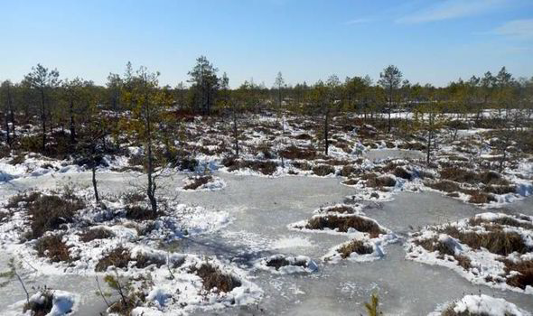

Most of the animals found in Siberia are forms of deer, along with a few bears(depending on which part. When you are hunting, hide in a tree with your gun/knife/boow/pointy stick and leave some appropriate bat to lure an animal to you. After a while somthing should investigate the bait whicha at that point you can pounce on the animal and attempt to kill them. If you succeed, you can cook the meat and have a good meal.
